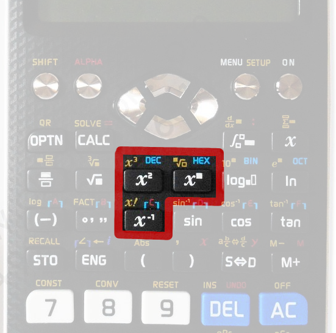
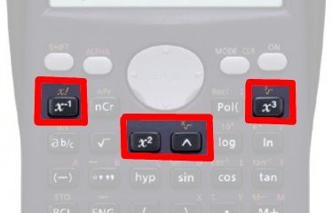
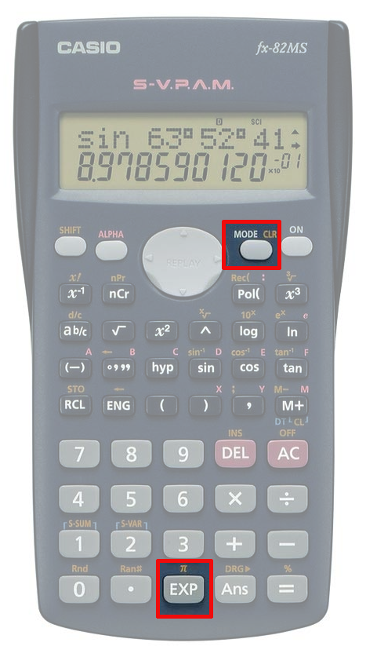
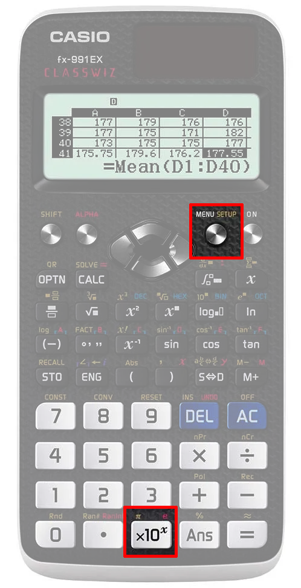
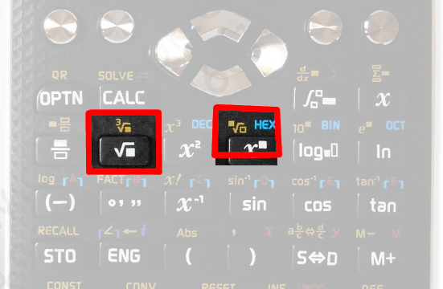
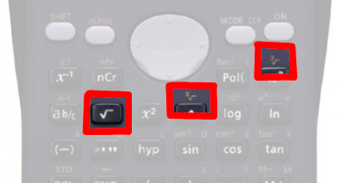
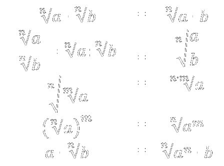
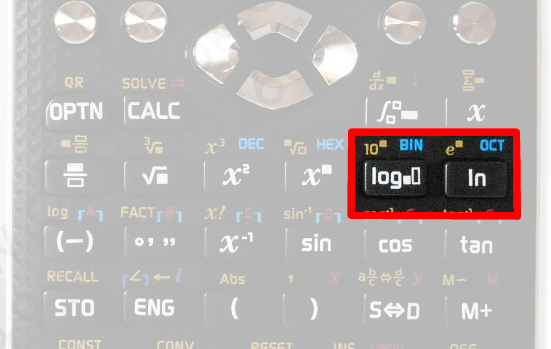
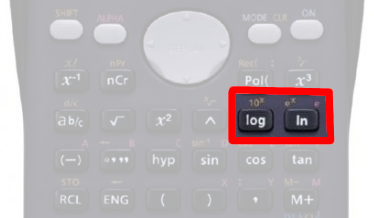

Tema 2: Potencias, radicales y logaritmos
Potencias
Definición de potencia
\[ 2^4 = 2 \cdot 2 \cdot 2 \cdot 2 \]
\[ 2^1 = 2 \] \[ 2^0 = 1 \]
Potencia de exponente negativo
\[ a^{-n} = \frac{1}{a^n} \]
\[ 2^{-1} = \frac{1}{2} \]
\[ 2^{-3} = \frac{1}{2^3} = \frac{1}{8} \]
Operaciones con potencias
\[ a^p \cdot a^q = a^{p+q} \]
\[ a^p : a^q = a^{p-q} \]
\[(a \cdot b)^p = a^p \cdot b^p\]
\[(\frac{a}{b})^p = (a : b)^p = a^p : b^p = \frac{a^p}{b^p} \]
\[ (a^p)^q = a^{p \cdot q} \]
1 (pag. 44 - ej. 54) Opera y da el resultado en forma de potencia:
- a \[ \frac{(5^{-2} : 5^4) \cdot 5^8}{5^{-3}} \] \[ = 5^5 \]
- b \[ \frac{ (2^6 \cdot 2^{-5}) : 2^{-2} }{2^{-4} : 2^{-9}} \] \[ = 2^{-2} \]
- c \[ \frac{ 3^4 : (3^{-6}: 3^5)}{3^{-2} \cdot 3^7} \] \[ = 3^{10} \]
- d \[ \frac{(7^4 \cdot 7^{-2}) : (7^{-3} \cdot 7^5)}{7^8 \cdot 7^2} \] \[ = 7^{-10} \]
2 (pag. 44 - ej. 55) Factoriza antes de operar y simplifica:
- a \[ \frac{ 3^{-4} \cdot 9^2}{27^{-5}} \] \[ = 3^{15} \]
- b \[ \frac{5^{-2} : 5^{-3}}{25^6} \] \[ = 5^{-11} \]
- c \[ \frac{7^4 \cdot 7^{-6}}{49^3} \] \[ = 7^{-8} \]
- d \[ \frac{4^9 : 2^{-2}}{8^{-7}} \] \[ = 2^{41} \]
3 (pag. 44 - ej. 56) Simplifica:
- a \[ \frac{3^6 \cdot 2^8 \cdot 5^3}{9^3 \cdot 25^2 \cdot 4^4} \] \[ = 5^{-1} \]
- b \[ \frac{ 3^{-4} \cdot 16 \cdot 9^{-1} }{ 8^2 \cdot 3^{-5} \cdot 2^{-3} } \] \[ = 2 \cdot 3^{-1} \]
- c \[ \frac{(-5)^3 \cdot (-8)^4 \cdot 9^{-2}}{(-3)^{-4} \cdot 2^7 \cdot 25^5} \] \[ = -5^{-7} \cdot 2^5 \]
- d \[ \frac{32^{-1} \cdot 36^{-2} \cdot 18^{-2}}{8^{-5} \cdot 6^{-3} \cdot 9^4} \] \[ = 2^7 \cdot 3^{-13} \]
4 Simplifica:
- a \[ \frac{2^3 \cdot 4^5 \cdot 2^6 \cdot 2 \cdot 8^{30}}{16 \cdot 2^3 \cdot 32 \cdot 2^4} \] \[ = 2^{94} \]
- b \[ \frac{15^2 \cdot 3^2 \cdot 5^3 \cdot 45^2}{25 \cdot 5^3 \cdot 125 \cdot 27} \] \[ = 3^5 \cdot 5^{-1} \]
- c \[ \frac{6 \cdot 12^3 \cdot 18^2 \cdot 3^2 \cdot 108^2}{27^2 \cdot 3^2 \cdot 16 \cdot 48 \cdot 36} \] \[ = 2^3 \cdot 3^5 \]
- d \[ \frac{4^3 \cdot (3^{-2})^{-3} \cdot 27^{-3} \cdot 32^2 \cdot (36^2)^{-2}}{8^2 \cdot (2^6)^2 \cdot (9^{-3})^5 \cdot 24^{-3} \cdot [(3^{-2})^2]^{-5}} \] \[ = 3^2 \cdot 2\]
4 Simplifica:
- e \[ \frac{3^3 \cdot [ (\frac{3}{2})^2]^3 \cdot (-2)^3 }{3^{-1} \cdot (\frac{4}{9})^{-4} \cdot (-\frac{3}{2})^{-1} \cdot 12} \] \[ = 2^2 \cdot 3^2 \]
- f \[ \frac{[(\frac{3}{5})^2 : (\frac{3}{5})^{-2}]^2 \cdot (-\frac{3}{5})^{-6}}{(\frac{9}{5})^{-2} \cdot [(3^2)^{-2}]^{-1} \cdot 15^{-3}} \] \[ = \frac{3^5}{5} \]
- g \[ \frac{(\frac{3}{2})^3 \cdot (-\frac{9}{8})^{-2} \cdot [(-\frac{3}{2})^{-1}]^{-3} \cdot [(\frac{2}{9})^{-2}]^0}{[(-\frac{3}{4})^{-3}]^2 \cdot (-\frac{16}{27})^{-1} \cdot 18^2 \cdot [(-\frac{1}{2})^{-5}]^{-2}} \] \[ = 3\]
Calculadora
 Notación Científica

5 (pag. 40 - ej. 32-33) Escribe, utilizando notación científica, estos números:
- a Distancia Tierra-Luna: 384000Km \[ = 3,84 \cdot 10^5 \]
- b Superficie de la tierra: 150000000 km² \[ = 1,5 \cdot 10^8 \]
- c Longitud de un virus (gripe): 0,0000000022 m \[ = 2,2 \cdot 10^{-9} m \]
- d Peso de un estafilococo: 0,0000001g \[ = 1 \cdot 10^{-7} g \]
Operaciones: multiplicación y división
6 Realiza las siguientes operaciones con números en notación científica:
- a \[ 6,342 \cdot 10^4 \cdot 5,34 \cdot 10^{-1} \] \[= 3,386628 \cdot 10^4\]
- b \[ 8,452 \cdot 10^{-6} \cdot 7,24 \cdot 10^{-8} \] \[= 6,119248 \cdot 10^{-13}\]
- c \[ 3,43 \cdot 10^3 : 2,45 \cdot 10^{-2} \] \[= 1,4 \cdot 10^5\]
- d \[ 4,234 \cdot 10^7 : 3,45 \cdot 10^5 \] \[= 1,2272 \cdot 10^2\]
Operaciones: suma y resta
7 Realiza las siguientes operaciones con números en notación científica:
- a \[ 6,342 \cdot 10^4 + 5,34 \cdot 10^{-1} \] \[= 6,3420534 \cdot 10^4\]
- b \[ 8,452 \cdot 10^{-6} - 7,24 \cdot 10^{-8} \] \[= 8,3796 \cdot 10^{-6}\]
- c \[ 3,43 \cdot 10^3 + 2,45 \cdot 10^{-2} \] \[= 3,43002450 \cdot 10^3 \]
- d \[ 4,234 \cdot 10^7 - 3,45 \cdot 10^5 \] \[= 4,1995 \cdot 10^7 \]
Calculadora
 Radicales
Raíces cuadradas
\[ \sqrt{a} = b \iff b^2 = a \]
\[ \sqrt{9} = 3 \iff 3^2 = 9 \]
...
\[ \sqrt[n]{a} = b \iff b^n = a \]
\[ \sqrt[3]{125} = 5 \iff 5^3 = 125 \]
...
Signos en las raíces n-ésimas
Calculadora
 8 (pag. 32 - ej. 8)Resuelve los siguientes radicales:
- a \[ \sqrt[4]{81} \] \[= \pm 3\]
- b \[ \sqrt[5]{32} \] \[= 2\]
- c \[ \sqrt[5]{-100 000} \] \[= -10\]
- d \[ \sqrt[4]{-256} \] \[ \nexists\]
- e \[ \sqrt[4]{625} \] \[= \pm 5\]
- f \[ \sqrt[4]{1296} \] \[= \pm 6\]
Potencias de exponente fraccionario
\[ \sqrt[n]{a^m} = a^{\frac{m}{n}} \]
9 (pag. 33 - ej. 9-10)Expresa las potencias de exponente fraccionario como radicales y los radicales como potencias de exponente fraccionario:
- a \[ 5^{\frac{1}{6}} \] \[= \sqrt[6]{5}\]
- b \[ 3^{\frac{4}{5}} \] \[= \sqrt[5]{3^4}\]
- c \[ 8^{\frac{4}{3}} \] \[= \sqrt[3]{8^4}\]
- d \[ \sqrt[3]{3^2} \] \[= 3^{\frac{2}{3}}\]
- e \[ \sqrt[4]{3^3} \] \[= 3^{\frac{3}{4}}\]
- f \[ \sqrt[3]{7^2} \] \[= 7^{\frac{2}{3}}\]
Sacar factores de un radical
10 (pag. 35 - ej. 17-18)Factoriza donde sea necesario y extrae factores de los siguientes radicales:
- a \[ \sqrt{2^{17} \cdot 50^{20} \cdot 13^{15}} \]
- b \[ \sqrt[3]{3^{30} \cdot 11^{54} \cdot 17^{14}} \]
- c \[ \sqrt[3]{2^{30} \cdot 17^{2} \cdot 23^{5}} \]
- d \[ \sqrt{24} \]
- e \[ \sqrt[3]{104} \]
- f \[ \sqrt[4]{405} \]
Propiedades
Suma y resta de radicales
11 Extrae factores y luego suma y resta las siguientes expresiones con radicales:
- a \[ 27\sqrt{3} + 5\sqrt{27} - 9\sqrt{12} \] \[= -6 \sqrt{3} \]
- b \[ \sqrt{75} - \sqrt{20} - \sqrt{12} + \sqrt{45} \] \[= 3\sqrt{3} + \sqrt{5} \]
- c \[ 2\sqrt{8} + 5 \sqrt{72} - 7\sqrt{18} - \sqrt{50} \] \[= 8 \sqrt{2} \]
- d \[ 5\sqrt{2} + 4\sqrt{8} + 3\sqrt{18} + 2\sqrt{32} + \sqrt{50} \] \[= 35\sqrt{2} \]
- e \[ \sqrt{128} + 5\sqrt{12} - 2\sqrt{18} - 3\sqrt{27} - \sqrt{2} \] \[= \sqrt{2} + \sqrt{3} \]
Multiplicación y división
12 (pag. 36 - ej. 21)Efectúa las siguientes operaciones.
- a \[ \sqrt{4} \cdot \sqrt[3]{5} \] \[ \]
- b \[ \sqrt{9} \cdot \sqrt[6]{4} \] \[ \]
- c \[ \sqrt[3]{6} : \sqrt[4]{4} \] \[ \]
- d \[ \sqrt{5} : \sqrt[6]{9} \] \[ \]
Potencias y raíces de radicales
13 (pag. 30-31 - ej. 22-23) Opera y simplifica
- a \[ \sqrt{(\sqrt[3]{5^2})^6} \] \[ \]
- b \[ \sqrt{(\sqrt[5]{3^{20}})^{\frac{1}{2}}} \] \[ \]
- c \[ (\sqrt[3]{\sqrt{10}})^4 \] \[ \]
- d \[ (\sqrt{(\sqrt[3]{12})^2})^5 \] \[ \]
Racionalización
Consiste en eliminar las raíces del denominador.
\[\frac{3}{\sqrt{2}} = \frac{3 \cdot \sqrt{2}}{\sqrt{2} \cdot \sqrt{2}} = \frac{3 \sqrt{2}}{2} \]
\[\frac{5}{\sqrt[5]{7^2}} \] \[ = \frac{5 \cdot \sqrt[5]{ 7^3}}{\sqrt[5]{7^2} \cdot \sqrt[5]{7^3}} = \frac{3 \sqrt[5]{7^3}}{7} \]
14 (pag. 38-39 - ej. 25-28) Racionaliza:
- a \[ \frac{4}{\sqrt{7}} \] \[ \]
- b \[ \frac{-3}{\sqrt{2}} \] \[ \]
- c \[ \frac{-6}{\sqrt[3]{2}} \] \[ \]
- d \[ \frac{10}{\sqrt[8]{5^3}} \] \[ \]
- e \[ \frac{\sqrt{5}}{\sqrt{3}} \] \[ \]
- f \[ \frac{2\sqrt{3}}{\sqrt{10}} \] \[ \]
- g \[ \frac{5}{-2\sqrt[5]{4}} \] \[ \]
- h \[ \frac{8 - \sqrt{7}}{3\sqrt{8}} \] \[ \]
Racionaliza
\[\frac{6}{\sqrt{2} + 3} \]\[ = \frac{6 \cdot (\sqrt{2} - 3)}{(\sqrt{2} + 3)\cdot (\sqrt{2} - 3)} = \frac{6 \cdot (\sqrt{2} - 3)}{2 - 3^2} \]
15 (pag. 39 - ej. 29) Racionaliza:
- a \[ \frac{1+\sqrt{3}}{1-\sqrt{2}} \] \[ \]
- b \[ \frac{5}{3-\sqrt{5}} \] \[ \]
- c \[ \frac{\sqrt{5}}{3-\sqrt{7}} \] \[ \]
- d \[ \frac{2 - \sqrt{2}}{4 + \sqrt{2}} \] \[ \]
16 (pag. 39 - ej. 31) Racionaliza:
- a \[ \frac{8}{3\sqrt[4]{8}} \] \[ \]
- b \[ \frac{\sqrt{5} - 4}{\sqrt{6}} \] \[ \]
- c \[ \frac{4}{\sqrt{3} - 5\sqrt{7}} \] \[ \]
- d \[ \frac{-1}{\sqrt{2} - \sqrt{5}} \] \[ \]
Logaritmos
\[log_a b = c \iff a^c = b\]
- \[log_2 8 = 3 \]
- \[log_2 16 =\] \[ 4 \]
- \[log_2 2 =\] \[ 1 \]
- \[log_2 1 =\] \[ 0 \]
- \[log_2 \sqrt{2} =\] \[ 1/2 \]
- \[log_2 1/2 =\] \[ -1 \]
- \[log_2 1/8 =\] \[ -3 \]
- ¿\[log_2 -3\]?
Logaritmo decimal
\[log~1000 = 3\]
Logaritmo neperiano
\[ln~e = 1\]
17 (pag. 39 - ej. 35) Resuelve sin usar la calculadora:
- a \[ \]
- b \[ \]
- c \[ \]
- d \[ \]
Calculadora
 18 (pag. 39 - ej. 35) Resuelve el ejercicio anterior usando la calculadora:
Propiedades de los logaritmos
\[log_a (b \cdot c) = log_a (b) + log_a (c)\]
\[log_a (b^n) = n \cdot log_a (b)\]
\[log_a (\frac{b}{c}) = log_a (b) - log_a (c)\]
\[log_a b = \frac{log_x b}{log_x a}\]
19 (pag. 42 - ej. 38) Halla el resultado de las siguientes operaciones usando las propiedades de los logaritmos:
- a \[ \]
- b \[ \]
- c \[ \]
- d \[ \]
20 (pag. 42 - ej. 39) Expresa como un único logaritmo:
- a \[ \]
- b \[ \]
- c \[ \]
- d \[ \]
21Factoriza y aplica las propiedades de los logaritmos para expresar en función de \[log_2~5\] y de \[log_2~3\]:
- a \[ \]
- b \[ \]
- c \[ \]
- d \[ \]